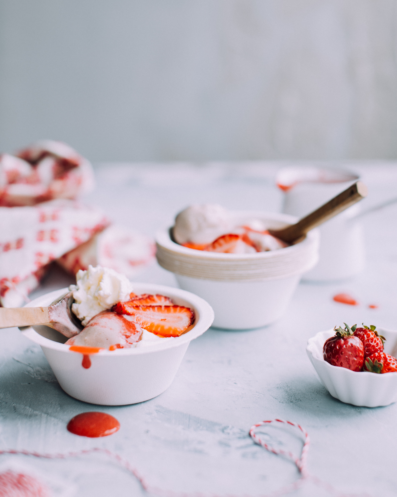

- Cake
- Bread
- Dessert
Dessert

디저트를 만드는 일은 매우
즐겁고 창의적인 일이다
그리고 내 경우
부엌에서 디저트를 만들고 있으면
기분이 매우 좋아지는 것을 발견할 수 있다.
또한 디저트를 만드는 일은 그 산출물을
먹는 가족들에게도 기쁨을 주는 일이기도 하다.
예를 들면 식사를 하고 난 후
어떤 디저트를 먹게 될까 하고 상상하는 것만으로도
식사시간이 즐거워지기 때문이다.
때로는 힘든 일로부터, 공부로 부터 받은 우울감을
달콤한 빵이나 케이크를 먹으면서 위로를 받을 수 도 있다.